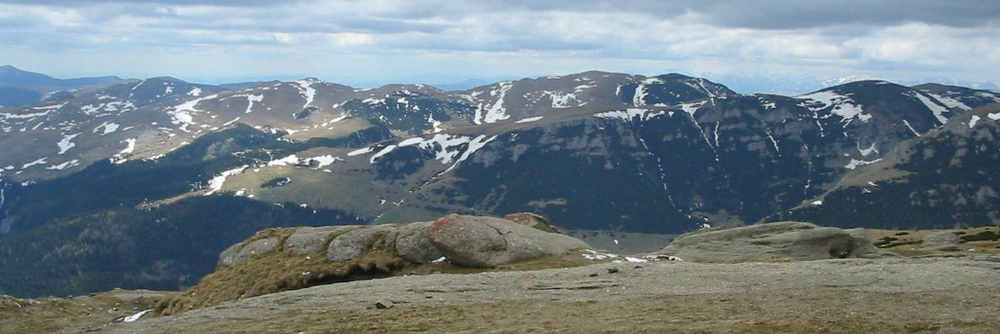
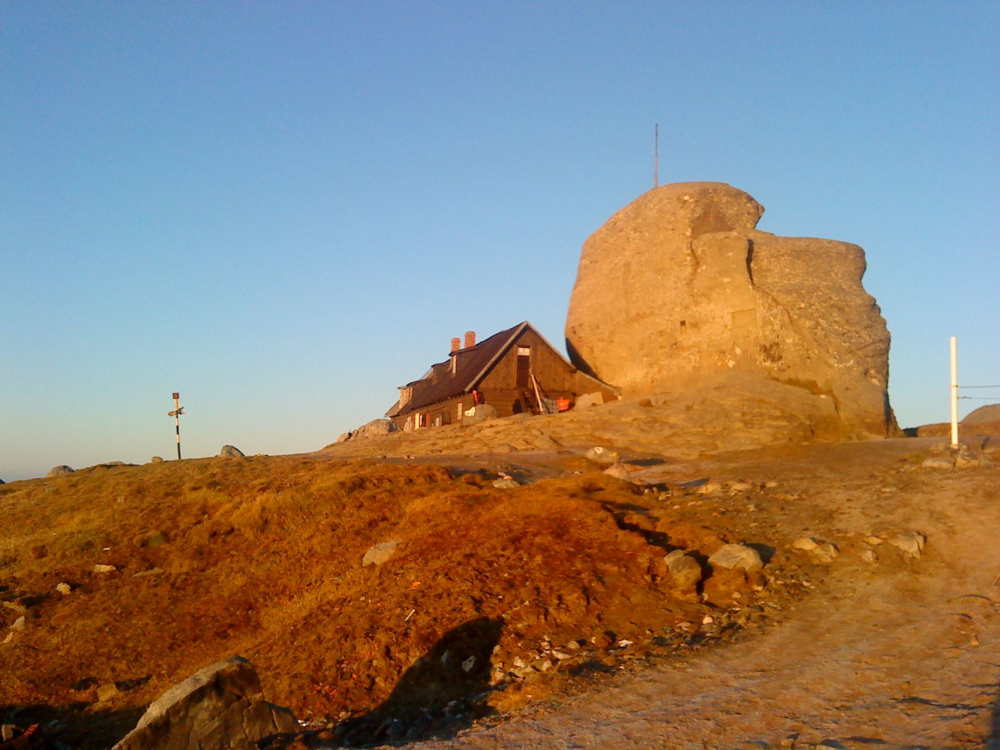
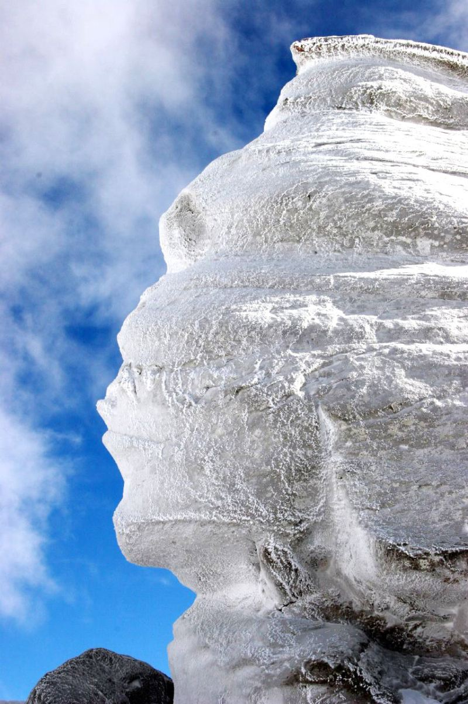
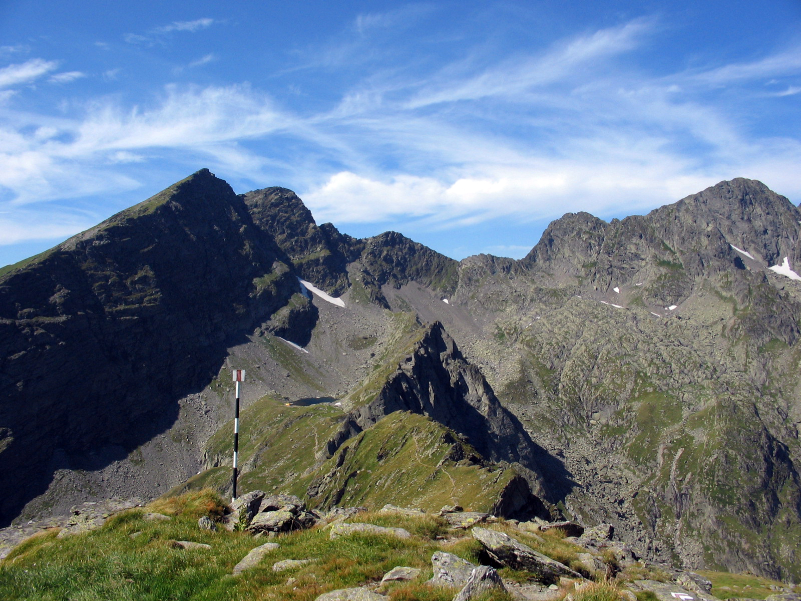
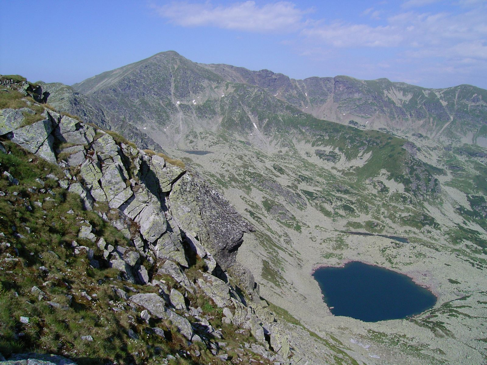
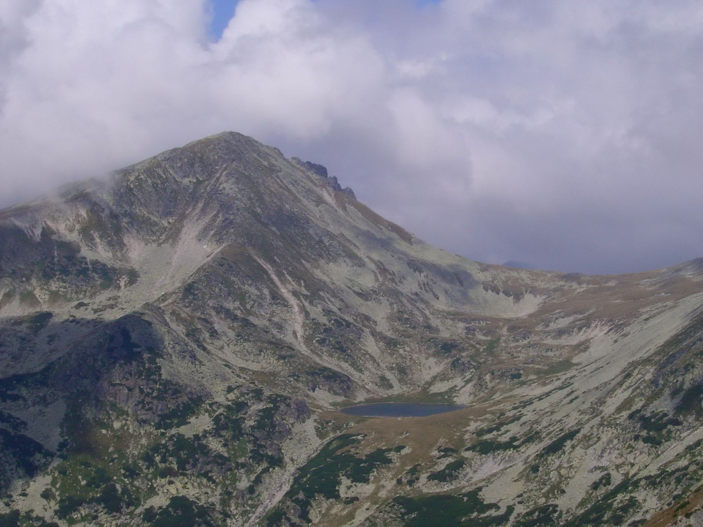

Carpații Meridionali
Carpații Meridionali au 4 grupe muntoase mai mari, subdivizate în 24 de grupe montane.
Grupa Bucegi
Carpații Meridionali - Grupa Bucegi s-au format prin încrețirea scoarței terestre în Orogeneza Alpină care s-a desfășurat în Cretacic la sfârșitul Mezozoicului și au continuat să se formeze până în Neogen;

Bogdan Giuşcă / CC BY-SA 3.0 / Panorama Munților Bucegi
Limite:
N - Depresiunea Brașov;
S - Subcarpații de Curbură;
E - Valea Prahovei;
V - Valea Dâmboviței;

Amorphisman / CC BY-SA 3.0 / Vârful Omu și Cabana Omu, Munții Bucegi
- Altitudinea maximă este în Vârful Omu, 2.505m.
Carpații Meridionali se caracterizează prin masivitate, deoarece sunt fragmentați de puține ape curgătoare, iar depresiunile ocupă suprafețe restrânse, în N - V se află culoarul Depresiunii Rucăr - Bran ce leagă Depresiunea Brașov de depresiunea Subcarpatică, Câmpul Muscel.
Tipuri de relief:
- relief carstic, format pe calcare, reprezentat prin lapiezuri, peșteri și văi sub formă de chei;
- relief petrografic și structural pe conglomerate reprezentate prin forme ciudate (Babele, Sfinxul din Bucegi - în Bucegi);
- relief glaciar reprezintat prin văi glaciare, creste ascuțite, acest tip de relief caracterizează îndeosebi Munții Bucegi care au altitudini mai mari de 2000 m.
- relief fluvial sculptat de apele curgătoare reprezentate prin văi adânci care în profil transversal au formă de V, de versanți abrupți , terase și lunci înguste.

Mickael UNG / CC BY-SA 2.0 / Sfinxul din Bucegi
{kind=link}

Fanstep / CC BY-SA 4.0 / Babele din Munții Bucegi
{kind=link}
Grupa Făgăraș
Carpații Meridionali - Grupa Făgăraș s-au format prin încrețirea scoarței terestre în Orogeneza Alpină care s-a desfășurat în Cretacic la sfârșitul Mezozoicului și au continuat să se formeze până în Neogen;

{kind=link}
Limite:
N - Depresiunea Colinară a Transilvaniei;
S - Subcarpații Getici;
E - Valea Dâmboviței;
V - Valea Oltului;
- Altitudinea maximă este în Vârful Moldoveanu, 2.544 m. Vârful Negoiu cu altitudine de 2.536 de metri a fost considerat cel mai înalt vărf din România în perioada interbelică.
Carpații Meridionali sunt dispuși sub forma unei creste masive (cu o lungime de aproximativ 70 de km ) pe direcția E-V.
Sectorul N (Făgăraș) este cel mai masiv și înregistrează numeroase vârfuri cu altitudini mai mari de 2.500 m., pe când sectorul sudic e format din masive izolate distincte (Munții Cozia, Ghițiu, Frunții, Iezer) care au altitudini mai mici de 2.000 m.
Sunt alcătuiți din sisturi cristaline cu intruziuni granitice ceea ce explică altitudinile mari pe care aceștia le înregistrează.
Tipuri de relief:
E caracteristic relieful glaciar care caracterizează suprafețe întinse, acesta e reprezentat prin văi glaciare care în profil transversal (au formă de U), circuri glaciare;
Relieful fluvial sculptat de apele curgătoare, văi înguste și adânci cu sectoare de luncă slab dezvoltate și terase. Se caracterizează prin masivitate, deoarece are altitudini mari și nu e fragmentată de depresiuni și culoare de vale cu caracter transversal.
Grupa Parâng
Carpații Meridionali - Grupa Parâng s-au format prin încrețirea scoarței terestre în Orogeneza Alpină care s-a desfășurat în Cretacic la sfârșitul Mezozoicului și au continuat să se formeze până în Neogen;
Limite:
N - Depresiunea Colinară a Transilvaniei (Podișul Transilvaniei);
S - Subcarpații Getici ;
E - Valea Oltului;
V - Valea Jiului;
- Altitudinea maximă este în Vârful Parângul Mare, 2.519 m.

{kind=link}
Ca alcătuire petrografică predomină sisturile cristaline cu intruziuni granitice, care caracterizează Munții Cândrel, Munții Lotru, Munții Parâng . În Munții Căpățânii și Munții Șureanu, se întâlnesc și roci calcaroase, ce favorizează existența reliefului carstic.
Carpații Meridionali au altitudini de peste 2.500 m, dar sunt fragmentați radiar de numeroase cursuri de apă, care separă principalele masive muntoase. La extremități se găsesc și zone depresionare.
În Munții Parâng se întâlnesc următoarele tipuri de relief:
- relief glaciar - sectorul central reprezentat prin circuri glaciare și văi glaciare;
- relief carstic - văi sub formă de chei, peșteri , prin lapiezuri prin depresiuni sub formă de doline, prin diaclize (crăpături adânci în stratele de roci specifice în Munții Căpățânii);
- relief fluvial - sculptat de apele curgătoare, reprezentat prin lunci înguste sisteme de terase, care dovedesc evoluția reliefului și versanți cu pante abrupte.
Retezat - Godeanu
Carpații Meridionali - Retezat - Godeanu s-au format prin încrețirea scoarței terestre în Orogeneza Alpină care s-a desfășurat în Cretacic la sfârșitul Mezozoicului și au continuat să se formeze până în Neogen;
Limite:
N - Culoarul Bistrei;
S - Subcarpații Getici; Podișul Mehedinți;
E - Valea Jiului ;
V - Culoarul Timiș - Cerna;
- Altitudinea maximă este în Vârful Peleaga, 2.509 m.

{kind=link}
Tipuri de relief - Carpații Meridionali:
- relief carstic, format pe calcare, reprezentat prin lapiezuri, peșteri și văi sub formă de chei;
- relief petrografic și structural pe conglomerate reprezentate prin forme ciudate (Babele, Sfinxul - în Bucegi);
- relief glaciar reprezintat prin văi glaciare, creste ascuțite, acest tip de relief caracterizează îndeosebi Munții Bucegi care au altitudini mai mari de 2.000 m.
- relief fluvial sculptat de apele curgătoare reprezentate prin văi adânci care în profil transversal au formă de V, de versanți abrupți, terase și lunci înguste.